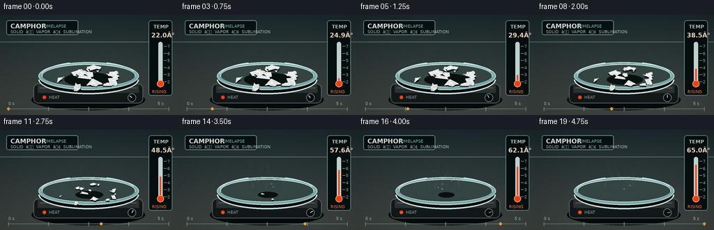
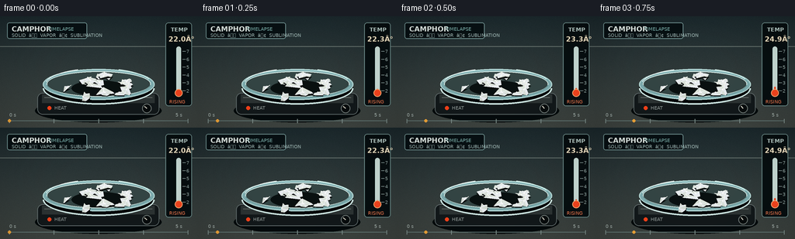
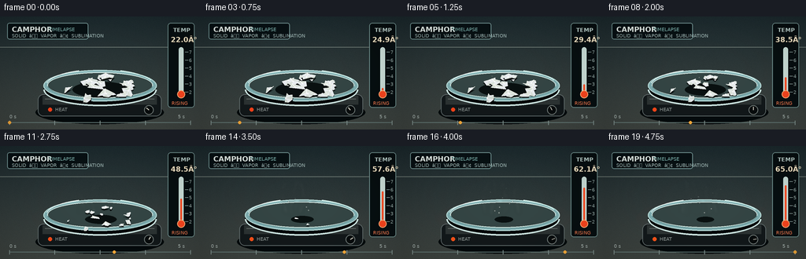

CODING AGENTS AS PIXEL WORLD MODELS
traex/GPT-5.6-Sol · phygen_119
点击播放 · 原生 RGB 像素
逐轮保存的候选
回放视频、检查图与代码变化。
每份候选均可单独播放。实际图片检查记录在下方工具轨迹中。
候选 01播放与检查图
点击播放 · 原生 RGB 像素

展开代码变化
--- 上一保存版本
+++ 本次保存版本
@@ -0,0 +1,213 @@
+from pathlib import Path
+import math
+import numpy as np
+from PIL import Image, ImageDraw, ImageFilter, ImageFont
+import artifact_io
+
+# Procedural macro timelapse: crystalline camphor sublimes as the indicated
+# ambient temperature rises. Render large then antialias for a photographic look.
+W, H, N = 256, 144, 20
+S = 3
+RW, RH = W*S, H*S
+rng = np.random.default_rng(119)
+
+try:
+ FONT_B = ImageFont.truetype('/usr/share/fonts/truetype/dejavu/DejaVuSans-Bold.ttf', 9*S)
+ FONT_S = ImageFont.truetype('/usr/share/fonts/truetype/dejavu/DejaVuSans.ttf', 6*S)
+ FONT_T = ImageFont.truetype('/usr/share/fonts/truetype/dejavu/DejaVuSans-Bold.ttf', 7*S)
+except Exception:
+ FONT_B = FONT_S = FONT_T = ImageFont.load_default()
+
+def sc(v): return int(round(v*S))
+def ellipse(draw, box, **kw): draw.ellipse(tuple(sc(x) for x in box), **kw)
+def rect(draw, box, **kw): draw.rounded_rectangle(tuple(sc(x) for x in box), radius=sc(kw.pop('radius',0)), **kw)
+def line(draw, xy, **kw): draw.line(tuple(sc(x) for x in xy), **kw)
+def poly(draw, pts, **kw): draw.polygon([(sc(x),sc(y)) for x,y in pts], **kw)
+
+# Crystal definitions (fixed locations and shapes) with staggered disappearance.
+crystals=[]
+for i in range(18):
+ a = rng.uniform(0, 2*math.pi)
+ rad = math.sqrt(rng.random())
+ x = 126 + math.cos(a)*rad*42
+ y = 91 + math.sin(a)*rad*16
+ base = rng.uniform(5.5, 11.5) * (0.9 + 0.2*(1-rad))
+ # Outer grains vanish earlier, large central ones persist.
+ end = np.clip(0.47 + 0.40*(base/11.5) + rng.uniform(-.08,.08), .43, .91)
+ start = rng.uniform(.03,.16)
+ nvert = int(rng.integers(5,8))
+ angles = np.sort(rng.uniform(0,2*math.pi,nvert))
+ shape=[]
+ for th in angles:
+ rr=rng.uniform(.68,1.15)
+ shape.append((math.cos(th)*rr, math.sin(th)*rr*.72))
+ crystals.append(dict(x=x,y=y,base=base,end=end,start=start,shape=shape,rot=rng.uniform(-.4,.4), tint=rng.integers(-5,8)))
+
+# Background texture remains stable (camera locked for timelapse).
+yy,xx=np.mgrid[0:RH,0:RW]
+base_bg=np.zeros((RH,RW,3),dtype=np.float32)
+top=np.array([29,43,47]); bot=np.array([66,72,68])
+f=(yy/(RH-1))[...,None]
+base_bg=top*(1-f)+bot*f
+noise=rng.normal(0,1.8,(RH,RW,1))
+base_bg=np.clip(base_bg+noise,0,255).astype(np.uint8)
+
+def alpha_layer(): return Image.new('RGBA',(RW,RH),(0,0,0,0))
+
+def draw_vapor(im, frame, p):
+ # Wispy translucent sublimation trails. Each trail meanders upward frame to frame.
+ lay=alpha_layer(); d=ImageDraw.Draw(lay)
+ strength=(math.sin(min(1,p)*math.pi*.86)**1.2) * (0.45+0.75*p)
+ count=3+int(6*p)
+ for j in range(count):
+ phase=j*1.73 + frame*.54
+ x0=(102 + (j*13)%49 + 2.5*math.sin(phase))*S
+ y0=(85 + (j%3)*2)*S
+ pts=[]
+ height=(17+25*p + (j%3)*4)*S
+ for k in range(25):
+ u=k/24
+ x=x0 + (math.sin(phase+u*5.2)*3.1 + math.sin(phase*.6+u*9)*1.1)*S*(.5+u)
+ y=y0-u*height
+ pts.append((int(x),int(y)))
+ alpha=int((18+26*p)*strength*(.65+.35*math.sin(j+2)**2))
+ d.line(pts, fill=(225,244,239,alpha), width=max(1,sc(1.2+u*.3)))
+ lay=lay.filter(ImageFilter.GaussianBlur(sc(2.1)))
+ return Image.alpha_composite(im,lay)
+
+def render(frame):
+ p=frame/(N-1)
+ # ease progression so early solid state reads clearly and disappearance is visible
+ q=p*p*(3-2*p)
+ bg=Image.fromarray(base_bg.copy(),'RGB').convert('RGBA')
+ d=ImageDraw.Draw(bg)
+
+ # Back wall seam and tabletop
+ d.line((0,sc(39),RW,sc(39)),fill=(104,116,111,70),width=sc(1))
+ # subtle warm pool from the heater increases over time
+ warm=alpha_layer(); wd=ImageDraw.Draw(warm)
+ for r in range(88,5,-4):
+ al=int((1-r/90)*3 + q*2)
+ wd.ellipse((sc(128-r),sc(93-r*.30),sc(128+r),sc(93+r*.30)),fill=(255,116,38,al))
+ bg=Image.alpha_composite(bg,warm)
+ d=ImageDraw.Draw(bg)
+
+ # Title HUD plaque
+ d.rounded_rectangle((sc(9),sc(8),sc(112),sc(29)),radius=sc(3),fill=(8,17,20,205),outline=(116,151,150,120),width=sc(1))
+ d.text((sc(15),sc(11)),"CAMPHOR",font=FONT_B,fill=(238,247,242,255))
+ d.text((sc(62),sc(13)),"TIMELAPSE",font=FONT_S,fill=(132,189,183,255))
+ d.text((sc(15),sc(21)),"SOLID â VAPOR ⢠SUBLIMATION",font=FONT_S,fill=(166,190,187,255))
+
+ # Hot plate body and projected shadow
+ ellipse(d,(45,107,208,137),fill=(5,11,13,90))
+ d.rounded_rectangle((sc(48),sc(99),sc(205),sc(127)),radius=sc(7),fill=(19,25,27,255),outline=(97,108,108,255),width=sc(1))
+ d.rectangle((sc(54),sc(101),sc(199),sc(112)),fill=(45,52,52,255))
+ d.line((sc(57),sc(105),sc(196),sc(105)),fill=(98,106,103,255),width=sc(1))
+ # warming indicator LED
+ ellipse(d,(61,116,66,121),fill=(255,67+int(20*q),26,255))
+ d.text((sc(70),sc(115)),"HEAT",font=FONT_S,fill=(154,163,160,255))
+ # adjustment knob
+ ellipse(d,(183,113,195,125),fill=(8,12,13,255),outline=(116,126,123,255),width=sc(1))
+ ang=-2.4+2.2*q
+ line(d,(189,119,189+4*math.cos(ang),119+4*math.sin(ang)),fill=(224,224,210,255),width=sc(1))
+
+ # Glass petri dish: shadow and bottom rim
+ ellipse(d,(55,73,199,114),fill=(1,7,9,95))
+ ellipse(d,(55,68,199,108),fill=(128,175,178,28),outline=(184,220,217,180),width=sc(1.2))
+ ellipse(d,(60,71,194,104),fill=(53,70,69,100),outline=(223,241,235,115),width=sc(1))
+ # glass lower front rim
+ d.arc((sc(55),sc(72),sc(199),sc(114)),0,180,fill=(210,234,230,170),width=sc(2))
+ d.arc((sc(60),sc(70),sc(194),sc(105)),5,175,fill=(102,150,151,160),width=sc(1))
+ # specular glints on glass
+ d.arc((sc(58),sc(67),sc(196),sc(109)),190,247,fill=(245,255,251,190),width=sc(1))
+ d.arc((sc(58),sc(67),sc(196),sc(109)),292,340,fill=(220,251,244,105),width=sc(1))
+
+ # Vapor behind the solid so strands appear to originate from it.
+ bg=draw_vapor(bg,frame,q)
+ d=ImageDraw.Draw(bg)
+
+ # Residue shadow, contracting with remaining mass.
+ rem=max(0,1-q/0.96)
+ ellipse(d,(92+25*(1-rem),83+7*(1-rem),164-25*(1-rem),103-6*(1-rem)),fill=(10,17,17,int(70*rem)))
+
+ # Draw crystals back-to-front. Size collapses nonlinearly near each end time.
+ alive=[]
+ for c in crystals:
+ if q < c['end']:
+ local=np.clip((q-c['start'])/(c['end']-c['start']),0,1)
+ sizefac=(1-local)**0.58
+ alive.append((c['y'],c,sizefac))
+ alive.sort()
+ for _,c,sizefac in alive:
+ # slight settling toward plate as crystal shrinks
+ cx=c['x']; cy=c['y']+2.0*(1-sizefac)
+ r=c['base']*sizefac
+ if r<.8: continue
+ pts=[(cx+px*r,cy+py*r) for px,py in c['shape']]
+ # crystal contact shadow
+ sp=[(cx+(x-cx)*1.07,cy+2.4+(y-cy)*.65) for x,y in pts]
+ poly(d,sp,fill=(7,12,12,105))
+ tint=int(c['tint'])
+ poly(d,pts,fill=(218+tint,226+tint,218+tint,255),outline=(250,252,240,255))
+ # angular facets toward an offset interior point
+ ip=(cx-r*.13,cy-r*.10)
+ for k in range(0,len(pts),2):
+ p1=pts[k]; p2=pts[(k+1)%len(pts)]
+ shade=225+((k*11+int(c['base']))%22)
+ poly(d,[p1,p2,ip],fill=(shade,shade+4,min(255,shade+7),190))
+ # bright upper edge and tiny crystalline highlight
+ ptop=min(pts,key=lambda z:z[1])
+ line(d,(ptop[0],ptop[1],ip[0],ip[1]),fill=(255,255,249,220),width=sc(.6))
+ ellipse(d,(ip[0]-.7,ip[1]-.7,ip[0]+.7,ip[1]+.7),fill=(255,255,255,220))
+
+ # A few lifted camphor particles suggest molecules escaping the solid.
+ particle=alpha_layer(); pd=ImageDraw.Draw(particle)
+ pc=3+int(7*q)
+ for j in range(pc):
+ u=((frame*.13+j*.277)%1)
+ x=126 + math.sin(j*3.4+frame*.31)* (8+20*u)
+ y=86-u*(15+30*q)
+ a=int(110*(1-u)*(0.4+q*.6))
+ rr=(.45+.45*(1-u))*S
+ pd.ellipse((x*S-rr,y*S-rr,x*S+rr,y*S+rr),fill=(239,250,243,a))
+ bg=Image.alpha_composite(bg,particle.filter(ImageFilter.GaussianBlur(sc(.35))))
+ d=ImageDraw.Draw(bg)
+
+ # Right-side glass thermometer / temperature indicator.
+ d.rounded_rectangle((sc(213),sc(8),sc(247),sc(116)),radius=sc(4),fill=(7,15,17,220),outline=(111,143,141,190),width=sc(1))
+ d.text((sc(220),sc(13)),"TEMP",font=FONT_T,fill=(194,216,211,255))
+ temp=22+43*q
+ d.text((sc(217),sc(24)),f"{temp:04.1f}°",font=FONT_B,fill=(255,239,206,255))
+ # gauge bulb and tube
+ d.rounded_rectangle((sc(227),sc(39),sc(233),sc(99)),radius=sc(3),fill=(206,225,219,70),outline=(207,233,226,170),width=sc(1))
+ level=96-(temp-20)/50*51
+ d.rounded_rectangle((sc(229),sc(level),sc(231),sc(97)),radius=sc(1),fill=(255,78,36,255))
+ ellipse(d,(225,94,235,104),fill=(255,71,31,255),outline=(255,179,121,255),width=sc(1))
+ for val in range(20,71,10):
+ gy=96-(val-20)/50*51
+ line(d,(235,gy,239,gy),fill=(161,183,179,210),width=sc(.7))
+ d.text((sc(240),sc(gy-3)),str(val)[0],font=FONT_S,fill=(153,174,170,255))
+ d.text((sc(218),sc(107)),"RISING",font=FONT_S,fill=(255,127,82,255))
+
+ # Bottom timelapse timeline with moving amber dot.
+ line(d,(12,135,242,135),fill=(104,125,122,180),width=sc(1))
+ for k in range(5):
+ x=12+k*(230/4)
+ line(d,(x,132.5,x,138),fill=(135,153,149,220),width=sc(1))
+ x=12+230*p
+ ellipse(d,(x-2,133,x+2,137),fill=(255,176,61,255))
+ d.text((sc(12),sc(124)),"0 s",font=FONT_S,fill=(178,191,187,255))
+ d.text((sc(226),sc(124)),"5 s",font=FONT_S,fill=(178,191,187,255))
+
+ # Gentle lens vignette.
+ arr=np.array(bg.convert('RGB')).astype(np.float32)
+ cy,cx=RH*.5,RW*.5
+ dist=((xx-cx)/(RW*.72))**2+((yy-cy)/(RH*.78))**2
+ vig=np.clip(1-.22*dist, .72,1)[...,None]
+ arr=np.clip(arr*vig,0,255).astype(np.uint8)
+ out=Image.fromarray(arr).resize((W,H),Image.Resampling.LANCZOS)
+ return np.array(out,dtype=np.uint8)
+
+frames=np.stack([render(i) for i in range(N)],axis=0)
+artifact_io.save(frames, Path(__file__).resolve().parent)
+print('saved',frames.shape,frames.dtype)
候选 02播放与检查图
点击播放 · 原生 RGB 像素


展开代码变化
--- 上一保存版本
+++ 本次保存版本
@@ -70,7 +70,7 @@
x=x0 + (math.sin(phase+u*5.2)*3.1 + math.sin(phase*.6+u*9)*1.1)*S*(.5+u)
y=y0-u*height
pts.append((int(x),int(y)))
- alpha=int((18+26*p)*strength*(.65+.35*math.sin(j+2)**2))
+ alpha=int((28+38*p)*strength*(.65+.35*math.sin(j+2)**2))
d.line(pts, fill=(225,244,239,alpha), width=max(1,sc(1.2+u*.3)))
lay=lay.filter(ImageFilter.GaussianBlur(sc(2.1)))
return Image.alpha_composite(im,lay)
@@ -128,7 +128,8 @@
# Residue shadow, contracting with remaining mass.
rem=max(0,1-q/0.96)
- ellipse(d,(92+25*(1-rem),83+7*(1-rem),164-25*(1-rem),103-6*(1-rem)),fill=(10,17,17,int(70*rem)))
+ if rem > .025:
+ ellipse(d,(92+25*(1-rem),83+7*(1-rem),164-25*(1-rem),103-6*(1-rem)),fill=(10,17,17,int(70*rem)))
# Draw crystals back-to-front. Size collapses nonlinearly near each end time.
alive=[]
可观测工具轨迹
实际执行的命令与返回图片。
命令 1exit 0
/bin/bash -lc "ls -la && printf '\\n--- prompt.txt ---\\n' && cat prompt.txt"
命令 2exit 0
/bin/bash -lc "printf '%s\\n' '--- GENERATION_RULES.md ---' && cat GENERATION_RULES.md && printf '%s\\n' '--- task_spec.json ---' && cat task_spec.json"
命令 3exit 0
/bin/bash -lc "sed -n '1,260p' artifact_io.py"
命令 4exit 0
/bin/bash -lc "cat > generate.py <<'PY'
from pathlib import Path
import math
import numpy as np
from PIL import Image, ImageDraw, ImageFilter, ImageFont
import artifact_io
# Procedural macro timelapse: crystalline camphor sublimes as the indicated
# ambient temperature rises. Render large then antialias for a photographic look.
W, H, N = 256, 144, 20
S = 3
RW, RH = W*S, H*S
rng = np.random.default_rng(119)
try:
FONT_B = ImageFont.truetype('/usr/share/fonts/truetype/dejavu/DejaVuSans-Bold.ttf', 9*S)
FONT_S = ImageFont.truetype('/usr/share/fonts/truetype/dejavu/DejaVuSans.ttf', 6*S)
FONT_T = ImageFont.truetype('/usr/share/fonts/truetype/dejavu/DejaVuSans-Bold.ttf', 7*S)
except Exception:
FONT_B = FONT_S = FONT_T = ImageFont.load_default()
def sc(v): return int(round(v*S))
def ellipse(draw, box, **kw): draw.ellipse(tuple(sc(x) for x in box), **kw)
def rect(draw, box, **kw): draw.rounded_rectangle(tuple(sc(x) for x in box), radius=sc(kw.pop('radius',0)), **kw)
def line(draw, xy, **kw): draw.line(tuple(sc(x) for x in xy), **kw)
def poly(draw, pts, **kw): draw.polygon([(sc(x),sc(y)) for x,y in pts], **kw)
# Crystal definitions (fixed locations and shapes) with staggered disappearance.
crystals=[]
for i in range(18):
a = rng.uniform(0, 2*math.pi)
rad = math.sqrt(rng.random())
x = 126 + math.cos(a)*rad*42
y = 91 + math.sin(a)*rad*16
base = rng.uniform(5.5, 11.5) * (0.9 + 0.2*(1-rad))
# Outer grains vanish earlier, large central ones persist.
end = np.clip(0.47 + 0.40*(base/11.5) + rng.uniform(-.08,.08), .43, .91)
start = rng.uniform(.03,.16)
nvert = int(rng.integers(5,8))
angles = np.sort(rng.uniform(0,2*math.pi,nvert))
shape=[]
for th in angles:
rr=rng.uniform(.68,1.15)
shape.append((math.cos(th)*rr, math.sin(th)*rr*.72))
crystals.append(dict(x=x,y=y,base=base,end=end,start=start,shape=shape,rot=rng.uniform(-.4,.4), tint=rng.integers(-5,8)))
# Background texture remains stable (camera locked for timelapse).
yy,xx=np.mgrid[0:RH,0:RW]
base_bg=np.zeros((RH,RW,3),dtype=np.float32)
top=np.array([29,43,47]); bot=np.array([66,72,68])
f=(yy/(RH-1))[...,None]
base_bg=top*(1-f)+bot*f
noise=rng.normal(0,1.8,(RH,RW,1))
base_bg=np.clip(base_bg+noise,0,255).astype(np.uint8)
def alpha_layer(): return Image.new('RGBA',(RW,RH),(0,0,0,0))
def draw_vapor(im, frame, p):
# Wispy translucent sublimation trails. Each trail meanders upward frame to frame.
lay=alpha_layer(); d=ImageDraw.Draw(lay)
strength=(math.sin(min(1,p)*math.pi*.86)**1.2) * (0.45+0.75*p)
count=3+int(6*p)
for j in range(count):
phase=j*1.73 + frame*.54
x0=(102 + (j*13)%49 + 2.5*math.sin(phase))*S
y0=(85 + (j%3)*2)*S
pts=[]
height=(17+25*p + (j%3)*4)*S
for k in range(25):
u=k/24
x=x0 + (math.sin(phase+u*5.2)*3.1 + math.sin(phase*.6+u*9)*1.1)*S*(.5+u)
y=y0-u*height
pts.append((int(x),int(y)))
alpha=int((18+26*p)*strength*(.65+.35*math.sin(j+2)**2))
d.line(pts, fill=(225,244,239,alpha), width=max(1,sc(1.2+u*.3)))
lay=lay.filter(ImageFilter.GaussianBlur(sc(2.1)))
return Image.alpha_composite(im,lay)
def render(frame):
p=frame/(N-1)
# ease progression so early solid state reads clearly and disappearance is visible
q=p*p*(3-2*p)
bg=Image.fromarray(base_bg.copy(),'RGB').convert('RGBA')
d=ImageDraw.Draw(bg)
# Back wall seam and tabletop
d.line((0,sc(39),RW,sc(39)),fill=(104,116,111,70),width=sc(1))
# subtle warm pool from the heater increases over time
warm=alpha_layer(); wd=ImageDraw.Draw(warm)
for r in range(88,5,-4):
al=int((1-r/90)*3 + q*2)
wd.ellipse((sc(128-r),sc(93-r*.30),sc(128+r),sc(93+r*.30)),fill=(255,116,38,al))
bg=Image.alpha_composite(bg,warm)
d=ImageDraw.Draw(bg)
# Title HUD plaque
d.rounded_rectangle((sc(9),sc(8),sc(112),sc(29)),radius=sc(3),fill=(8,17,20,205),outline=(116,151,150,120),width=sc(1))
d.text((sc(15),sc(11)),\"CAMPHOR\",font=FONT_B,fill=(238,247,242,255))
d.text((sc(62),sc(13)),\"TIMELAPSE\",font=FONT_S,fill=(132,189,183,255))
d.text((sc(15),sc(21)),\"SOLID â VAPOR ⢠SUBLIMATION\",font=FONT_S,fill=(166,190,187,255))
# Hot plate body and projected shadow
ellipse(d,(45,107,208,137),fill=(5,11,13,90))
d.rounded_rectangle((sc(48),sc(99),sc(205),sc(127)),radius=sc(7),fill=(19,25,27,255),outline=(97,108,108,255),width=sc(1))
d.rectangle((sc(54),sc(101),sc(199),sc(112)),fill=(45,52,52,255))
d.line((sc(57),sc(105),sc(196),sc(105)),fill=(98,106,103,255),width=sc(1))
# warming indicator LED
ellipse(d,(61,116,66,121),fill=(255,67+int(20*q),26,255))
d.text((sc(70),sc(115)),\"HEAT\",font=FONT_S,fill=(154,163,160,255))
# adjustment knob
ellipse(d,(183,113,195,125),fill=(8,12,13,255),outline=(116,126,123,255),width=sc(1))
ang=-2.4+2.2*q
line(d,(189,119,189+4*math.cos(ang),119+4*math.sin(ang)),fill=(224,224,210,255),width=sc(1))
# Glass petri dish: shadow and bottom rim
ellipse(d,(55,73,199,114),fill=(1,7,9,95))
ellipse(d,(55,68,199,108),fill=(128,175,178,28),outline=(184,220,217,180),width=sc(1.2))
ellipse(d,(60,71,194,104),fill=(53,70,69,100),outline=(223,241,235,115),width=sc(1))
# glass lower front rim
d.arc((sc(55),sc(72),sc(199),sc(114)),0,180,fill=(210,234,230,170),width=sc(2))
d.arc((sc(60),sc(70),sc(194),sc(105)),5,175,fill=(102,150,151,160),width=sc(1))
# specular glints on glass
d.arc((sc(58),sc(67),sc(196),sc(109)),190,247,fill=(245,255,251,190),width=sc(1))
d.arc((sc(58),sc(67),sc(196),sc(109)),292,340,fill=(220,251,244,105),width=sc(1))
# Vapor behind the solid so strands appear to originate from it.
bg=draw_vapor(bg,frame,q)
d=ImageDraw.Draw(bg)
# Residue shadow, contracting with remaining mass.
rem=max(0,1-q/0.96)
ellipse(d,(92+25*(1-rem),83+7*(1-rem),164-25*(1-rem),103-6*(1-rem)),fill=(10,17,17,int(70*rem)))
# Draw crystals back-to-front. Size collapses nonlinearly near each end time.
alive=[]
for c in crystals:
if q < c['end']:
local=np.clip((q-c['start'])/(c['end']-c['start']),0,1)
sizefac=(1-local)**0.58
alive.append((c['y'],c,sizefac))
alive.sort()
for _,c,sizefac in alive:
# slight settling toward plate as crystal shrinks
cx=c['x']; cy=c['y']+2.0*(1-sizefac)
r=c['base']*sizefac
if r<.8: continue
pts=[(cx+px*r,cy+py*r) for px,py in c['shape']]
# crystal contact shadow
sp=[(cx+(x-cx)*1.07,cy+2.4+(y-cy)*.65) for x,y in pts]
poly(d,sp,fill=(7,12,12,105))
tint=int(c['tint'])
poly(d,pts,fill=(218+tint,226+tint,218+tint,255),outline=(250,252,240,255))
# angular facets toward an offset interior point
ip=(cx-r*.13,cy-r*.10)
for k in range(0,len(pts),2):
p1=pts[k]; p2=pts[(k+1)%len(pts)]
shade=225+((k*11+int(c['base']))%22)
poly(d,[p1,p2,ip],fill=(shade,shade+4,min(255,shade+7),190))
# bright upper edge and tiny crystalline highlight
ptop=min(pts,key=lambda z:z[1])
line(d,(ptop[0],ptop[1],ip[0],ip[1]),fill=(255,255,249,220),width=sc(.6))
ellipse(d,(ip[0]-.7,ip[1]-.7,ip[0]+.7,ip[1]+.7),fill=(255,255,255,220))
# A few lifted camphor particles suggest molecules escaping the solid.
particle=alpha_layer(); pd=ImageDraw.Draw(particle)
pc=3+int(7*q)
for j in range(pc):
u=((frame*.13+j*.277)%1)
x=126 + math.sin(j*3.4+frame*.31)* (8+20*u)
y=86-u*(15+30*q)
a=int(110*(1-u)*(0.4+q*.6))
rr=(.45+.45*(1-u))*S
pd.ellipse((x*S-rr,y*S-rr,x*S+rr,y*S+rr),fill=(239,250,243,a))
bg=Image.alpha_composite(bg,particle.filter(ImageFilter.GaussianBlur(sc(.35))))
d=ImageDraw.Draw(bg)
# Right-side glass thermometer / temperature indicator.
d.rounded_rectangle((sc(213),sc(8),sc(247),sc(116)),radius=sc(4),fill=(7,15,17,220),outline=(111,143,141,190),width=sc(1))
d.text((sc(220),sc(13)),\"TEMP\",font=FONT_T,fill=(194,216,211,255))
temp=22+43*q
d.text((sc(217),sc(24)),f\"{temp:04.1f}°\",font=FONT_B,fill=(255,239,206,255))
# gauge bulb and tube
d.rounded_rectangle((sc(227),sc(39),sc(233),sc(99)),radius=sc(3),fill=(206,225,219,70),outline=(207,233,226,170),width=sc(1))
level=96-(temp-20)/50*51
d.rounded_rectangle((sc(229),sc(level),sc(231),sc(97)),radius=sc(1),fill=(255,78,36,255))
ellipse(d,(225,94,235,104),fill=(255,71,31,255),outline=(255,179,121,255),width=sc(1))
for val in range(20,71,10):
gy=96-(val-20)/50*51
line(d,(235,gy,239,gy),fill=(161,183,179,210),width=sc(.7))
d.text((sc(240),sc(gy-3)),str(val)[0],font=FONT_S,fill=(153,174,170,255))
d.text((sc(218),sc(107)),\"RISING\",font=FONT_S,fill=(255,127,82,255))
# Bottom timelapse timeline with moving amber dot.
line(d,(12,135,242,135),fill=(104,125,122,180),width=sc(1))
for k in range(5):
x=12+k*(230/4)
line(d,(x,132.5,x,138),fill=(135,153,149,220),width=sc(1))
x=12+230*p
ellipse(d,(x-2,133,x+2,137),fill=(255,176,61,255))
d.text((sc(12),sc(124)),\"0 s\",font=FONT_S,fill=(178,191,187,255))
d.text((sc(226),sc(124)),\"5 s\",font=FONT_S,fill=(178,191,187,255))
# Gentle lens vignette.
arr=np.array(bg.convert('RGB')).astype(np.float32)
cy,cx=RH*.5,RW*.5
dist=((xx-cx)/(RW*.72))**2+((yy-cy)/(RH*.78))**2
vig=np.clip(1-.22*dist, .72,1)[...,None]
arr=np.clip(arr*vig,0,255).astype(np.uint8)
out=Image.fromarray(arr).resize((W,H),Image.Resampling.LANCZOS)
return np.array(out,dtype=np.uint8)
frames=np.stack([render(i) for i in range(N)],axis=0)
artifact_io.save(frames, Path(__file__).resolve().parent)
print('saved',frames.shape,frames.dtype)
PY
python generate.py"命令 5exit 0
/bin/bash -lc "grep -n \"SOLID\\|alpha=int\\|92+25\\|temp:04\" generate.py"
命令 6exit 0
/bin/bash -lc "python - <<'PY'
p='generate.py'
s=open(p).read()
s=s.replace(\"alpha=int((18+26*p)*strength\", \"alpha=int((28+38*p)*strength\")
s=s.replace('\"SOLID â VAPOR ⢠SUBLIMATION\"','\"SOLID > VAPOR | SUBLIMATION\"')
s=s.replace(\" ellipse(d,(92+25*(1-rem),83+7*(1-rem),164-25*(1-rem),103-6*(1-rem)),fill=(10,17,17,int(70*rem)))\", \" if rem > .025:\\n ellipse(d,(92+25*(1-rem),83+7*(1-rem),164-25*(1-rem),103-6*(1-rem)),fill=(10,17,17,int(70*rem)))\")
s=s.replace('f\"{temp:04.1f}ð\"','f\"{temp:04.1f} C\"')
open(p,'w').write(s)
PY
python generate.py
python - <<'PY'
import numpy as np
from PIL import Image
p=np.load('pixels.npz')['pixels']
print('pixels',p.shape,p.dtype,'frames_exist',len(list(__import__('pathlib').Path('frames').glob('*.png'))))
print('rgb first/last unique',len(np.unique(p[:,:,0])),len(np.unique(p[:,:,-1])))
PY"视觉工具实际返回图片 1

保存候选 2 份；完成命令 6 次；可验证图片返回 1 张。原始 API 响应与完整日志保留在本地。